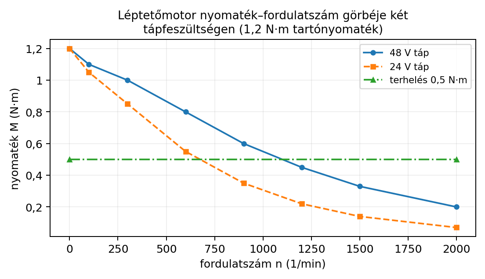

Miért működik az univerzális motor váltakozó áramon is?
Mi a különbség a kefés és a kefementes (BLDC) egyenáramú motor
között?
Hogyan számítod ki egy léptetőmotor fordulatszámát az
impulzusfrekvenciából?
Mi a léptetőmotor és a szervomotor alapvető különbsége?
Miért nem szabad a BLDC motort közvetlenül a hálózatra kötni?
Milyen nyomaték jellemzi a léptetőmotor lépéskihagyásának
határát?
Megoldások az alfejezet végén.
28.2.2 Feladatok
28.2.2.1 1. feladat (A)
Definiáld az univerzális motort! Milyen nyomatékképlet jellemzi?
28.2.2.2 2. feladat (A)
Egy
lépéses léptetőmotort
frekvenciájú impulzussor hajt. Mekkora a fordulatszám?
28.2.2.3 3. feladat (B)
Egy EC ventilátormotor
mechanikai teljesítményt ad le
fordulatszámon. Számítsd ki a nyomatékát!
28.2.2.4 4. feladat (B)
Egy fúrógép univerzális motorja
hálózatról
-t
vesz fel,
.
Számítsd ki a hálózati hatásos teljesítményt és a látszólagos
teljesítményt!
28.2.2.5 5. feladat (C)
Adott egy CNC-tengely hajtása, amelyhez vagy
tartási nyomatékú léptetőmotort, vagy
névleges
(
csúcs) nyomatékú szervomotort akarnak használni. A gépi folyamat során a
tengely nyomatékigénye
,
és a tengelynek gyakran kell
-ról
-ra
gyorsulnia, majd pontosan pozícionálni. Melyik motort választanád és
miért?
28.2.2.6 6. feladat (D)
Egy szervohajtás beüzemelése során azt tapasztalod, hogy a motor álló
helyzetben éles, zümmögő hangot ad, a tengely pedig milliméteres
amplitúdóval berezzen. Mi lehet a hiba? Milyen lépésekkel javítanád?
28.2.2.7 7. feladat (A) –
motorválasztás
Melyik motort választanád a döntési kérdéssor alapján, és melyik
kérdéseken át jutsz el hozzá?
Légkezelő ventilátora, 0–10 V-os fordulatszám-alapjellel, halk
üzemmel.
Címkéző gép: kis, állandó terhelésű tengely, adott lépésekben kell
továbbítani.
Robotkar csuklója: gyors mozgás, változó teher.
Kézi fúrógép.
Állandó fordulatú öntözőszivattyú, háromfázisú hálózaton.
28.2.3 Megoldások
Önellenőrzés – válaszok
Miért működik az univerzális motor váltakozó áramon
is? Mert soros gerjesztésnél a hálózati polaritásváltás
egyszerre változtatja meg a gerjesztőfluxus és a forgórészáram irányát,
így a nyomaték iránya változatlan marad.
Mi a különbség a kefés és a kefementes (BLDC) egyenáramú
motor között? A kefés motor mechanikus kommutátort és
szénkeféket használ, a BLDC motor állandó mágneses forgórésszel
rendelkezik, és elektronikus inverter végzi a kommutációt. A BLDC
zajtalanabb, hatékonyabb, de mindig hajtáselektronikát igényel.
Hogyan számítod ki egy léptetőmotor fordulatszámát az
impulzusfrekvenciából?
.
Mi a léptetőmotor és a szervomotor alapvető
különbsége? A léptetőmotor nyitott hurkú (nincs
visszacsatolás), a szervomotor zárt hurkú (encoder vagy resolver). A
szervo nagyobb dinamikát és pontosabb, gyorsabb pozícionálást tesz
lehetővé.
Miért nem szabad a BLDC motort közvetlenül a hálózatra
kötni? Mert a forgórész helyzetét és a tekercsek áramirányát
elektronika vezérli; a 50 Hz-es hálózati mező az álló állandó mágneses
forgórészt nem tudja szinkronba húzni, a motor nem indul, nagy áramot
vesz fel és túlmelegszik (helyzetérzékelés szerinti kommutáció nélkül
nem működik).
Milyen nyomaték jellemzi a léptetőmotor lépéskihagyásának
határát? Az aktuálisan rendelkezésre álló nyomaték a
fordulatszám növekedésével csökken. Ha a terhelő nyomaték ezt
meghaladja, a motor lépéseket veszít.
1. feladat (A) megoldása
Az univerzális motor soros gerjesztésű, kommutátoros motor, amely
egyaránt üzemel egyenfeszültségről és egyfázisú váltakozó feszültségről.
A nyomatékot a
képlet adja. Soros kapcsolás miatt
,
így
.
2. feladat (A) megoldása
Adott:
,
lépésszám fordulatonként
.
Ellenőrzés:
azt jelenti, hogy a motor
fordulatot tesz meg másodpercenként, ami
.
Ez a léptetőmotorok gyakori üzemi tartománya.
3. feladat (B) megoldása
Adott:
,
.
A motor tehát körülbelül
nyomatékot ad le a ventilátor tengelyén.
4. feladat (B) megoldása
Adott:
,
,
.
Ellenőrzés: A
-os
teljesítménytényező miatt a látszólagos teljesítmény nagyobb, mint a
hatásos, ami az univerzális motoroknál (a vasveszteség és az induktív
jelleg miatt) gyakori.
5. feladat (C) megoldása
A
tartási nyomatékú léptetőmotor látszólag erősebb, de a léptetőmotor
nyomatéka
fordulatszámon már a statikus nyomaték töredékére csökken. Ha a folyamat
nyomatékot igényel, a léptetőmotor valószínűleg lépéseket fog veszíteni,
mert a nyomatéktartaléka elolvad. A
névleges nyomatékú szervomotor tartósan is leadja a szükséges
-t,
a gyorsításhoz pedig rövid ideig a névleges többszörösét (itt
csúcsot) adhatja, és a zárt visszacsatolás miatt a pozíciót tartja. (Egy
névleges nyomatékú szervomotor a
tartós igényhez kevés lenne: csúcsnyomatékát csak rövid ideig adhatja,
tartósan túlmelegedne; a szervomotort a tartós, effektív nyomatékra és a
gyorsítás csúcsnyomatékára kell méretezni.) Ezért a gyors gyorsulásra és
pontos pozícionálásra a szervomotor a jobb választás.
6. feladat (D) megoldása
A tünet (álló helyzetben berezgés, zümmögés) a szervohajtás helytelen
hangolására vagy a visszacsatoló jel zavarára utal.
Lépések:
Ellenőrzés. Nézd meg a hajtás paramétereit. Ha a
pozícióhurok erősítése túl nagy, a motor a parancsolt pozíció körül
oszcillál.
Csökkentés. Csökkentsd a pozícióhurok arányos
erősítését
(),
majd fokozatosan növeld, amíg a rezgés meg nem szűnik, de a
pozíciótartás még pontos marad.
Visszacsatolás. Ha a rezgés nem szűnik meg,
ellenőrizd az encoder kábelét! Az árnyékolás hiánya vagy a rossz
földelés zajt visz a jelre, ami a szabályozót téves pozícióadatokkal
eteti.
Mechanika. Ha ezek sem segítenek, vizsgáld meg a
tengelykapcsolót és a hajtott mechanikát: holtjáték vagy túl lágy
tengelycsatlakozás is okozhat berezgést.
K1 igen, K2 nem: léptetőmotor (a nyomatékot a
működési fordulaton ellenőrizni kell).
K1 igen, K2 igen: szervomotor.
K1 nem, K3 igen (a fordulatot a ravasz szabályozza), K5 igen:
univerzális motor.
K0 nem, K1 nem, K3 nem, K4 igen: aszinkron motor
(az indítási módot a teljesítmény és a hálózat dönti el).
28.2.4 Univerzális motor (kefés
soros motor) – példák és gyakorlók
Példa. Egy söprűgép univerzális motorja
,
hálózatról
-t
vesz fel, a teljesítménytényezője pedig
.
A hálózatból felvett hatásos teljesítmény:
Ha a gép hatásfoka
,
a kimenő mechanikai teljesítmény
.
28.2.5 Kefementes egyenáramú
motorok (BLDC/EC) – példák és gyakorlók
Példa. Egy EC ventilátormotor leadott
tengelyteljesítménye
,
fordulatszáma
.
A motor által kifejtett nyomaték:
28.2.6 Léptetőmotorok – példák és
gyakorlók
Példa. Ha a vezérlés
frekvenciával ad impulzusokat egy
lépéses motornak, a fordulatszám:
Kidolgozott példa: léptetőhajtás beállítása. Egy
adagoló szánját 1,8°-os léptetőmotor hajtja közvetlenül egy 5 mm
menetemelkedésű trapézorsón; a driveren 1/8 mikrolépést állítunk be, a
kívánt szánsebesség 50 mm/s. Mekkora impulzusfrekvenciát adjon a PLC, és
mekkora az elméleti felbontás?
Impulzus fordulatonként:
.
Fordulat másodpercenként:
,
azaz
.
Impulzusfrekvencia:
.
Elméleti felbontás:
impulzusonként.
Ellenőrzés:
✓.
A mikrolépés finomítja a felbontást, de ugyanahhoz a sebességhez
arányosan nagyobb impulzusfrekvencia kell – ezért ellenőrizni kell, hogy
a PLC impulzuskimenete ezt a frekvenciát tudja-e. Arról, hogy 600
1/min-en a motor elég nyomatékot ad-e, a nyomaték–fordulatszám görbe
dönt:

Léptetőmotor nyomaték–fordulatszám
görbéje két tápfeszültségen (1,2 N·m tartónyomaték) - Szemléltető,
katalógus-jellegű pontok, nem gyártói adat; a tényleges görbe a gyártó
pull-out (kiesési) görbéje. A 0,5 N·m-es terhelés vonala 48 V-on kb.
1100 1/min-nél, 24 V-on kb. 675 1/min-nél metszi a görbét: e fölött a
motor lépést veszít.
A görbéről leolvasható: 0,5 N·m terhelésnél 48 V-os tápról kb. 1100
1/min, 24 V-ról csak kb. 675 1/min a lépésvesztés határa (a
metszéspontok a két szomszédos pont közötti lineáris közelítésből). A
példa 600 1/min-je tehát 24 V-on már csak kis tartalékkal, 48 V-on
biztonságosan teljesíthető. Tanulság: nagyobb
tápfeszültségen a driver a tekercsinduktivitás ellenére gyorsabban fel
tudja építeni az áramot, ezért a motor nagyobb fordulatszámon is tartja
a nyomatékot.
A következő generátorral tetszőleges számú hasonló feladatot
gyakorolhatsz (orsó, fogasszíj, és fordítva: a vezérlő legnagyobb
frekvenciájából a legnagyobb sebesség); a nyomtatott kiadásban alatta
nyolc rögzített feladat áll megoldókulccsal.
Statikus változat (mint a PDF-ben)
Léptetőhajtás-gyakorló: mintafeladat fogasszíjas tengelyre
lépésenkénti megoldással (a HTML-kiadásban interaktív
feladatgenerátor)
Rögzített feladatsor. Nyolc gyakorlófeladat
léptetőhajtásra (az 1. és 2. a tétel mintapéldája); a megoldókulcs a
lista után.
(B) Léptetőmotor: lépésszög 0,9°, a driver
mikrolépés-osztása 1/4. A motor közvetlenül egy s = 4 mm menetemelkedésű
orsót hajt; a kívánt szánsebesség v = 20 mm/s. Számítsd ki az
impulzus/fordulat értéket, a fordulat/s-ot, az impulzusfrekvenciát és az
elméleti felbontást!
(C) Léptetőmotor: lépésszög 1,8°, a driver
mikrolépés-osztása 1/16. A motor egy 20 fogú, t = 2 mm fogosztású
fogasszíj-tárcsát hajt; a kívánt sebesség v = 200 mm/s. Számítsd ki az
impulzus/fordulat értéket, a fordulat/s-ot, az impulzusfrekvenciát és az
elméleti felbontást!
(B) Léptetőmotor: lépésszög 1,8°, a driver
mikrolépés-osztása 1/8. A motor közvetlenül egy s = 5 mm menetemelkedésű
orsót hajt; a kívánt szánsebesség v = 25 mm/s. Számítsd ki az
impulzus/fordulat értéket, a fordulat/s-ot, az impulzusfrekvenciát és az
elméleti felbontást!
(B) Léptetőmotor: lépésszög 1,8°, a driver
mikrolépés-osztása 1/2. A motor közvetlenül egy s = 10 mm
menetemelkedésű orsót hajt; a kívánt szánsebesség v = 100 mm/s. Számítsd
ki az impulzus/fordulat értéket, a fordulat/s-ot, az impulzusfrekvenciát
és az elméleti felbontást!
(B) Léptetőmotor: lépésszög 0,9°, a driver
mikrolépés-osztása 1/8. A motor közvetlenül egy s = 2 mm menetemelkedésű
orsót hajt; a kívánt szánsebesség v = 10 mm/s. Számítsd ki az
impulzus/fordulat értéket, a fordulat/s-ot, az impulzusfrekvenciát és az
elméleti felbontást!
(C) Léptetőmotor: lépésszög 1,8°, a driver
mikrolépés-osztása 1/32. A motor egy 16 fogú, t = 2 mm fogosztású
fogasszíj-tárcsát hajt; a kívánt sebesség v = 160 mm/s. Számítsd ki az
impulzus/fordulat értéket, a fordulat/s-ot, az impulzusfrekvenciát és az
elméleti felbontást!
(A) Léptetőmotor: lépésszög 1,8°, a driver
mikrolépés-osztása 1/4. A motornak n = 600 1/min fordulatszámmal kell
forognia. Hány impulzus kell egy fordulathoz, és mekkora
impulzusfrekvenciát adjon a vezérlő?
(D) Léptetőmotor: lépésszög 1,8°, a driver
mikrolépés-osztása 1/8. Az orsó menetemelkedése s = 5 mm, a vezérlő
impulzuskimenete legfeljebb 20 kHz-et tud. Mekkora a legnagyobb
fordulatszám és szánsebesség?
Megoldókulcs.
A rögzített feladatsor megoldókulcsa
Feladat
Szint
Eredmény
1.
B
N = 1600 imp/ford; r = 5 1/s; f = 8 kHz; Δx = 0,0025 mm
2.
C
N = 3200 imp/ford; r = 5 1/s; f = 16 kHz; Δx = 0,0125 mm
3.
B
N = 1600 imp/ford; r = 5 1/s; f = 8 kHz; Δx = 0,003125 mm
4.
B
N = 400 imp/ford; r = 10 1/s; f = 4 kHz; Δx = 0,025 mm
5.
B
N = 3200 imp/ford; r = 5 1/s; f = 16 kHz; Δx = 0,000625 mm
6.
C
N = 6400 imp/ford; r = 5 1/s; f = 32 kHz; Δx = 0,005 mm
Lépések fordulatonként: 360° / 0,9° = 400; mikrolépéssel N = 400 · 4
= 1600 impulzus/fordulat.
Egy fordulat alatt az orsó a menetemelkedésnyit, s = 4 mm-t
mozdít.
Fordulat/s: r = v / s = 20 mm/s / 4 mm = 5 1/s.
Impulzusfrekvencia: f = N · r = 1600 · 5 1/s = 8000 Hz.
Felbontás: Δx = s / N = 4 mm / 1600 = 0,0025 mm/impulzus.
Ellenőrzés: f · Δx = 8000 · 0,0025 = 20 mm/s = v ✓
Lépések fordulatonként: 360° / 1,8° = 200; mikrolépéssel N = 200 ·
16 = 3200 impulzus/fordulat.
Egy fordulat alatt a szíj a tárcsa kerületét teszi meg: s = z · t = 20 ·
2 mm = 40 mm.
Fordulat/s: r = v / s = 200 mm/s / 40 mm = 5 1/s.
Impulzusfrekvencia: f = N · r = 3200 · 5 1/s = 16 000 Hz.
Felbontás: Δx = s / N = 40 mm / 3200 = 0,0125 mm/impulzus.
Ellenőrzés: f · Δx = 16 000 · 0,0125 = 200 mm/s = v ✓
Lépések fordulatonként: 360° / 1,8° = 200; mikrolépéssel N = 200 · 8
= 1600 impulzus/fordulat.
Egy fordulat alatt az orsó a menetemelkedésnyit, s = 5 mm-t
mozdít.
Fordulat/s: r = v / s = 25 mm/s / 5 mm = 5 1/s.
Impulzusfrekvencia: f = N · r = 1600 · 5 1/s = 8000 Hz.
Felbontás: Δx = s / N = 5 mm / 1600 = 0,003125 mm/impulzus.
Ellenőrzés: f · Δx = 8000 · 0,003125 = 25 mm/s = v ✓
Lépések fordulatonként: 360° / 1,8° = 200; mikrolépéssel N = 200 · 2
= 400 impulzus/fordulat.
Egy fordulat alatt az orsó a menetemelkedésnyit, s = 10 mm-t
mozdít.
Fordulat/s: r = v / s = 100 mm/s / 10 mm = 10 1/s.
Impulzusfrekvencia: f = N · r = 400 · 10 1/s = 4000 Hz.
Felbontás: Δx = s / N = 10 mm / 400 = 0,025 mm/impulzus.
Ellenőrzés: f · Δx = 4000 · 0,025 = 100 mm/s = v ✓
Lépések fordulatonként: 360° / 0,9° = 400; mikrolépéssel N = 400 · 8
= 3200 impulzus/fordulat.
Egy fordulat alatt az orsó a menetemelkedésnyit, s = 2 mm-t
mozdít.
Fordulat/s: r = v / s = 10 mm/s / 2 mm = 5 1/s.
Impulzusfrekvencia: f = N · r = 3200 · 5 1/s = 16 000 Hz.
Felbontás: Δx = s / N = 2 mm / 3200 = 0,000625 mm/impulzus.
Ellenőrzés: f · Δx = 16 000 · 0,000625 = 10 mm/s = v ✓
Lépések fordulatonként: 360° / 1,8° = 200; mikrolépéssel N = 200 ·
32 = 6400 impulzus/fordulat.
Egy fordulat alatt a szíj a tárcsa kerületét teszi meg: s = z · t = 16 ·
2 mm = 32 mm.
Fordulat/s: r = v / s = 160 mm/s / 32 mm = 5 1/s.
Impulzusfrekvencia: f = N · r = 6400 · 5 1/s = 32 000 Hz.
Felbontás: Δx = s / N = 32 mm / 6400 = 0,005 mm/impulzus.
Ellenőrzés: f · Δx = 32 000 · 0,005 = 160 mm/s = v ✓
Lépések fordulatonként: 360° / 1,8° = 200; mikrolépéssel N = 200 · 4
= 800 impulzus/fordulat.
n = 600 1/min = 10 fordulat/s (osztás 60-nal).
f = N · n = 800 · 10 1/s = 8000 Hz.
Lépések fordulatonként: 360° / 1,8° = 200; mikrolépéssel N = 200 · 8
= 1600 impulzus/fordulat.
A legnagyobb fordulat/s: r = f / N = 20000 Hz / 1600 = 12,5 1/s.
nmax = 60 · r = 750 1/min.
vmax = r · s = 12,5 · 5 mm = 62,5 mm/s.
Ellenőrizd a nyomaték–fordulatszám görbén is, hogy ezen a fordulatszámon
a motor még elég nyomatékot ad-e!
28.2.7 Szervomotorok – példák és
gyakorlók
Példa. Egy szervomotor
nyomatékot ad le
fordulatszámon. A leadott mechanikai teljesítmény:
A szervomotor rövid időre (a gyorsításhoz) a névleges nyomaték
többszörösét is leadhatja, ezért indításkor sokkal nagyobb
csúcsteljesítményt kell biztosítani.
A szervomotor és a hajtás kapcsolatát a következő ábra mutatja. Az
(a) részen a motor kivágott oldalnézete látszik: a négyszögletes
szerelőkarima (1) és a retesszel ellátott tengely (2) mögött az
állórész-tekercselés (3) és az állandó mágneses forgórész (4), utána a
tartófék (5), a hátsó részben az enkóder (6); felül a teljesítmény- (7)
és a jeladócsatlakozó (8). A (b) rész a bekötést mutatja: a motorkábel
(U, V, W, PE és a fék erei) árnyékolt, az árnyékolást mindkét végén
EMC-bilincs fogja be; a jeladókábel külön fut; a hajtásban a pozíció-, a
sebesség- és az áramhurok egymásba ágyazva szabályoz.